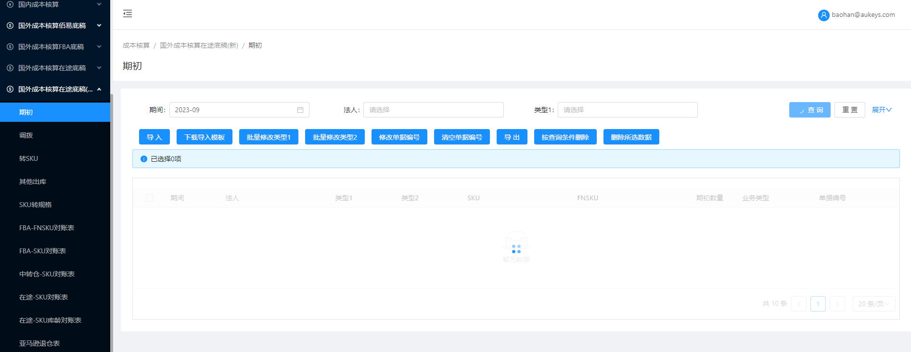

注意：以下均为新增页面
1.【期初】页面：
1.1搜索框：【法人】：下拉多选，无默认值，选项展示法人管理页面【法人类型】=‘境外法人’且【模块类型】=‘在途底稿’且【当前期间】不为空的法人主体；
1.2按钮：1.2.1【导入】：1.2.1.1所导法人仅限【法人管理】页面中【法人类型】=‘境外法人’且【模块类型】=‘在途底稿’的对应法人数据；
1.2.1.2所导期间仅限上述法人主体在【法人管理】页面对应的当前期间；（若存在）其余逻辑不变；
1.2.2【下载导入模板】：提示修改为：法人：仅限境外法人，期间为在途底稿的当前期间；
1.2.3【按查询条件删除】【删除所选数据】：按照对应境外法人在途底稿模块的当前期间删除数据；
——其余页面按钮字段展示及逻辑与【国外成本核算在途底稿（新）/期初】页面保持一致；
2.【调拨】页面：
2.1搜索框：【法人】：下拉多选，无默认值，选项展示法人管理页面【法人类型】=‘境外法人’且【模块类型】=‘在途底稿’且【当前期间】不为空的法人主体；
2.2按钮：2.2.1【导入】：1.2.1.1所导法人仅限【法人管理】页面中【法人类型】=‘境外法人’且【模块类型】=‘在途底稿’的对应法人数据；
1.2.1.2所导期间仅限上述法人主体在【法人管理】页面对应的当前期间；（若存在）其余逻辑不变；
2.2.2【下载导入模板】：提示修改为：期间：格式为年份+月份，如2019-08（文本格式），仅限境外法人在途底稿模块的当前期间 法人：仅限境外法人；数量：仅限整数；
2.2.3【拉取佰易底稿数据】【拉取FBA底稿数据】：拉取数据范围为【法人类型】=“境外法人”且【模块类型】=“在途底稿”对应法人当前期间数据；
2.2.4【按查询条件删除】【删除所选数据】：按照对应境外法人在途底稿模块的当前期间删除数据；
——其余页面按钮字段展示及逻辑与【国外成本核算在途底稿（新）/调拨】页面保持一致；
3.【转SKU】页面：
3.1搜索框：【法人】：下拉多选，无默认值，选项展示法人管理页面【法人类型】=‘境外法人’且【模块类型】=‘在途底稿’且【当前期间】不为空的法人主体；
3.2按钮：3.2.1【导入】：3.2.1.1所导法人仅限【法人管理】页面中【法人类型】=‘境外法人’且【模块类型】=‘在途底稿’的对应法人数据；
3.2.1.2所导期间仅限上述法人主体在【法人管理】页面对应的当前期间；（若存在）其余逻辑不变；
3.2.2【下载导入模板】：提示修改为：期间：格式为年份+月份，如2019-08（文本格式），仅限境外法人在途底稿模块的当前期间 法人：仅限境外法人；
3.2.3【清空本期转SKU数据】【按查询条件删除】【删除所选数据】：按照对应境外法人在途底稿模块的当前期间清空/删除数据；
——其余页面按钮字段展示及逻辑与【国外成本核算在途底稿（新）/转SKU】页面保持一致；
4.【其他出库】页面：
4.1搜索框：【法人】：下拉多选，无默认值，选项展示法人管理页面【法人类型】=‘境外法人’且【模块类型】=‘在途底稿’且【当前期间】不为空的法人主体；
4.2按钮：4.2.1【导入】：4.2.1.1所导法人仅限【法人管理】页面中【法人类型】=‘境外法人’且【模块类型】=‘在途底稿’的对应法人数据；
4.2.1.2所导期间仅限上述法人主体在【法人管理】页面对应的当前期间；（若存在）其余逻辑不变；
4.2.2【下载导入模板】：提示修改为：法人仅限境外法人，期间为在途底稿的当前期间；
4.2.3【清空本期转SKU数据】【按查询条件删除】【删除所选数据】：按照对应境外法人在途底稿模块的当前期间清空/删除数据；
——其余页面按钮字段展示及逻辑与【国外成本核算在途底稿（新）/其他出库】页面保持一致；
5.【SKU转规格】页面：
5.1搜索框：【法人】：下拉多选，无默认值，选项展示法人管理页面【法人类型】=‘境外法人’且【模块类型】=‘在途底稿’且【当前期间】不为空的法人主体；
5.2按钮：5.2.1【导入】：5.2.1.1所导法人仅限【法人管理】页面中【法人类型】=‘境外法人’且【模块类型】=‘在途底稿’的对应法人数据；
5.2.1.2所导期间仅限上述法人主体在【法人管理】页面对应的当前期间；（若存在）其余逻辑不变；
5.2.2【下载导入模板】：提示修改为：法人仅限境外法人，期间为在途底稿的当前期间；
5.2.3【按查询条件删除】【删除所选数据】：按照对应境外法人在途底稿模块的当前期间清空/删除数据；
——其余页面按钮字段展示及逻辑与【国外成本核算在途底稿（新）/SKU转规格】页面保持一致；
6.【FBA-FNSKU对账表】页面：——按钮字段展示及逻辑与【国外成本核算在途底稿（新）/FBA-FNSKU对账表】页面保持一致；
7.【FBA-SKU对账表】页面：
7.1搜索框：【法人】：下拉多选，无默认值，选项展示法人管理页面【法人类型】=‘境外法人’且【模块类型】=‘在途底稿’且【当前期间】不为空的法人主体；
7.2按钮：【拉取出入库数据并计算期末】【拉取SKU名称与FNSKU】【生成转SKU数据】【查看生成转SKU进度】：限制为【法人类型】=“境外法人”且【模块类型】=“在途底稿”对应法人当前期间数据；
——其余页面按钮字段展示及逻辑与【国外成本核算在途底稿（新）/FBA-SKU对账表】页面保持一致；
8.【中转仓-SKU对账表】页面：
8.1搜索框：【法人】：下拉多选，无默认值，选项展示法人管理页面【法人类型】=‘境外法人’且【模块类型】=‘在途底稿’且【当前期间】不为空的法人主体；
8.2按钮：【拉取出入库数据并计算期末】：限制为【法人类型】=“境外法人”且【模块类型】=“在途底稿”对应法人当前期间数据；
——其余页面按钮字段展示及逻辑与【国外成本核算在途底稿（新）/中转仓-SKU对账表】页面保持一致；
9.【在途-SKU对账表、在途-SKU库龄对账表】页面：
9.1搜索框：【法人】：下拉多选，无默认值，选项展示法人管理页面【法人类型】=‘境外法人’且【模块类型】=‘在途底稿’且【当前期间】不为空的法人主体；
9.2按钮：【同步数据】：限制为【法人类型】=“境外法人”且【模块类型】=“在途底稿”对应法人当前期间数据；
——其余页面按钮字段展示及逻辑与【国外成本核算在途底稿（新）/在途-SKU对账表、在途-SKU库龄对账表】页面保持一致；
10.【亚马逊退仓表、退仓库龄对账表】页面：
——页面按钮字段展示及逻辑与【国外成本核算在途底稿（新）/亚马逊退仓表、退仓库龄对账表】页面保持一致；
11.【结账】页面：
列表：数据来源【法人管理】页面； 列表展示【法人类型】=‘境外法人’且【模块类型】=“在途底稿”的【法人名称】【模块】【初始化期间】【当前期间】字段；
——页面按钮字段展示及逻辑与【国外成本核算在途底稿（新）/结账】页面保持一致；